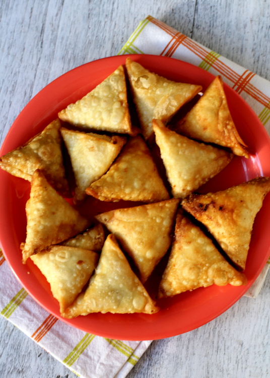

Samosa

Description
Samosa or Sambusa is one of the most popular and elegant appetizers -specially in Ramadan- in the Arab world, Pakistan and India. Samosa wrappers are very thin, long sheets of dough close to the egg rolls, and shaped like triangles and then deep fried. You can have all types of fillings!
Ingredients
- Egg roll wrappers or Samosa wrappers
- 1 lb (454 g) lamb or beef or peas
- 5 potatoes
- 2 tbsp cilantro
- 0.5 tsp chopped onion
- 0.5 tsp curry powder
- 0.5 tsp cinnamon
- Salt to taste
Steps
- Wash the meat, dry it, and cook it until it is fully cooked. Then, break the meat into small pieces.
- Boil the potatoes until they are tender, then cut them into small pieces.
- In a mixing bowl, combine the cooked meat, potatoes, cilantro, onion, and seasonings.
- Take a small amount of the mixture and place it in one corner of an egg roll wrapper. Fold the wrapper in half to form a triangular shape.
- Use milk to seal the edges of the wrapper.
- Deep fry the filled wrappers until they are golden brown and crispy.
Home